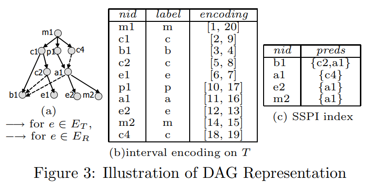
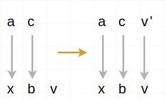
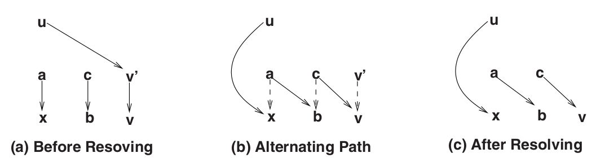

Graph reachability quries : a survey
Advisor : Prof. Kun-Ta,Chuang
Student : Yi-Wei,Wang
Introduction
Graph reachability (or simply reachability) queries have being studied and are deemed to be a very basic type of graph queries
for many applications.
- To understand whether two people are related for security reasons
- Find all genes whose expressions are directly or indirectly influenced by a given molecule
Directed graph to DAG

Time/Space Complexity of different approaches

Tree + SSPI

PL(b1)={c2, a1}, both of which are immediate surplus predecessors of b1.
While a1 is a surrogate predecessor for both e2 and m2.
While a1 is a surrogate predecessor for both e2 and m2.
Dual-labeling

Link table : 9→[6,9) , 7→[1,5)
Bipartite Matching


A Flat Partitioning Approach
The cover joining becomes the bottleneck of the whole processing. Schenkel et al.
propose an effective and efficient approach for the third step of cover joining,
using a skeleton graph (SG).


Re-labeling a subgraph

Reserving all alternative paths